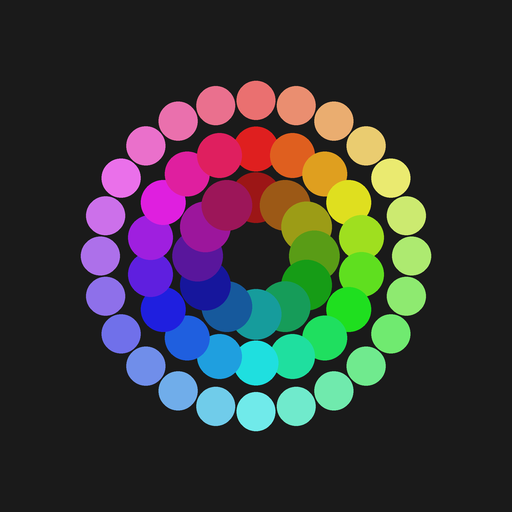

A free colour wheel for miniature painters. See 2,638 paints from the big hobby brands laid out by hue and lightness, find what goes with what, and match paints across brands.
Open the colour wheel What's newEvery paint placed by its hue around the wheel and its lightness from centre to rim. Tick whole ranges or single paints, from any mix of brands.
Tap any paint to see its closest equivalents in the other ranges, so you can swap a paint you don't own for one you do.
Keep a list of the paints on your shelf and bring them up on the wheel in one tap.
Share how you painted something, step by step, with the paints, photos and video for each stage.
Sign in with Google, Discord, GitHub or an email and password to save your collection, recipes and wheel across devices.
The main changes to The Painters Desk, newest first. Found a bug or have an idea? Use the Feedback button on any page.
Hue runs around the wheel; paints nearer the rim are lighter, nearer the center darker. Tap a paint to see its complement and neighbors for underpainting, shading and glazing. Dashed outline = wash, glowing outline = fluorescent. Switch to Ramps to build a shadow-to-highlight ramp from any paint for non-metallic metal, object source lighting, gems, skin, zenithal highlights, edge highlights or glazing blends.
Tick a whole range, or open it and tick individual paints. Selections from different ranges and brands show on the wheel together. While searching, a range checkbox selects only the matches.
Tap a paint to inspect it.
Use the Choose paints panel to show any mix of paints from any brand. Basing textures appear in this list only, when selected.